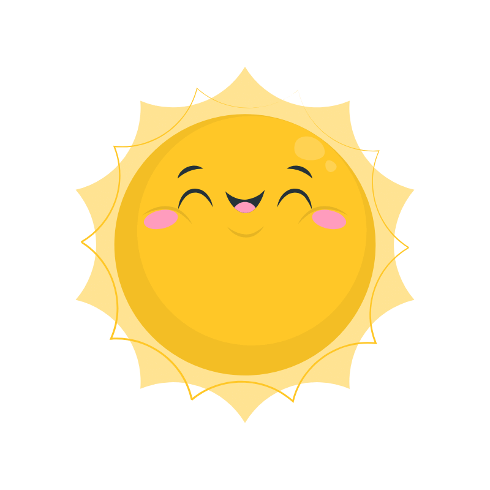

ABDOU
Abdou nasce nel 2009 in Guinea da due genitori che gli vogliono bene.

Abdou ha 16 anni, è arrivato da poco in Italia ma parla bene la lingua italiana.


Le sue giornate iniziano molto presto. Professa la religione islamica e alle 5 del mattino si alza per pregare.


Non ha la cittadinanza italiana, quindi frequenta una scuola per imparare l'arte della panificazione, così da poter avere un lavoro in futuro.

Un giorno, mentre faceva jogging al Porto Antico è stato fermato da un tecnico federale che lo aveva notato, e da quel momento iniziò a praticare l'atletica.

Di tanto in tanto, Abdou porta ai suoi compagni di atletica della focaccia da mangiare insieme a fine allenamento.

Con il suo gruppo di amici partecipa a feste o eventi, sempre nel rispetto della propria religione.